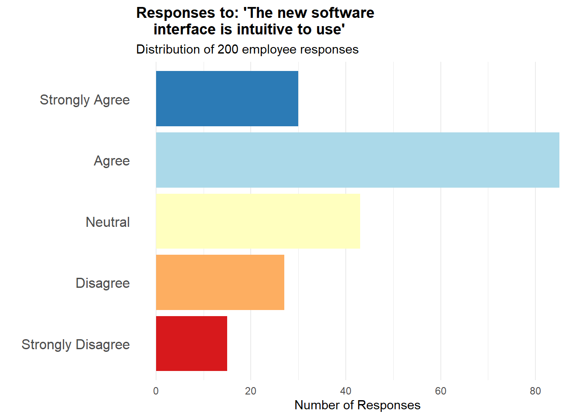
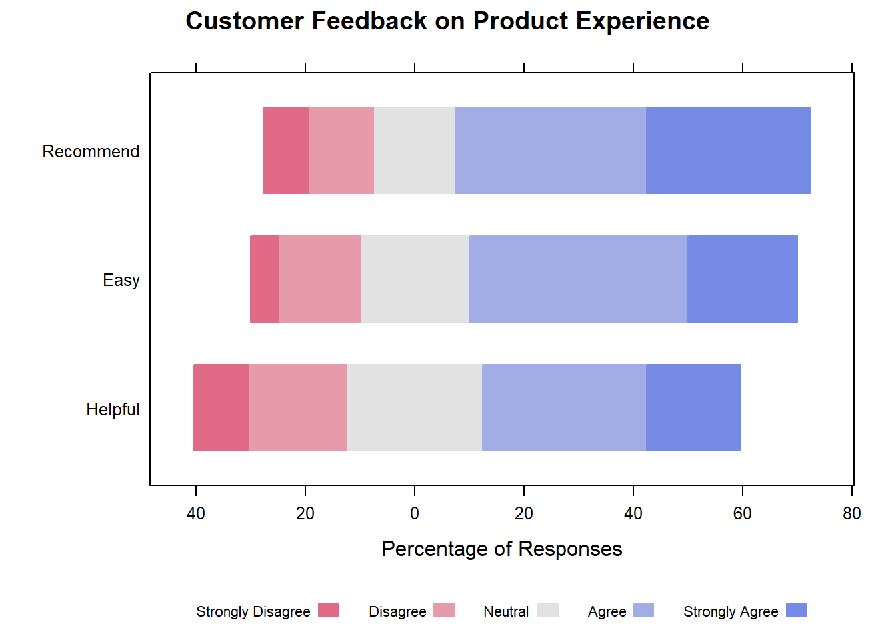
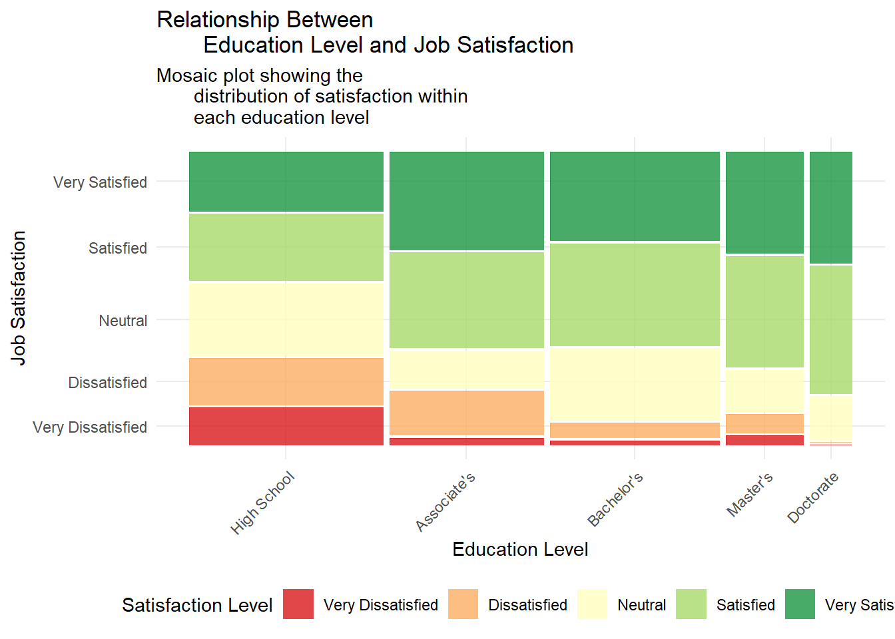
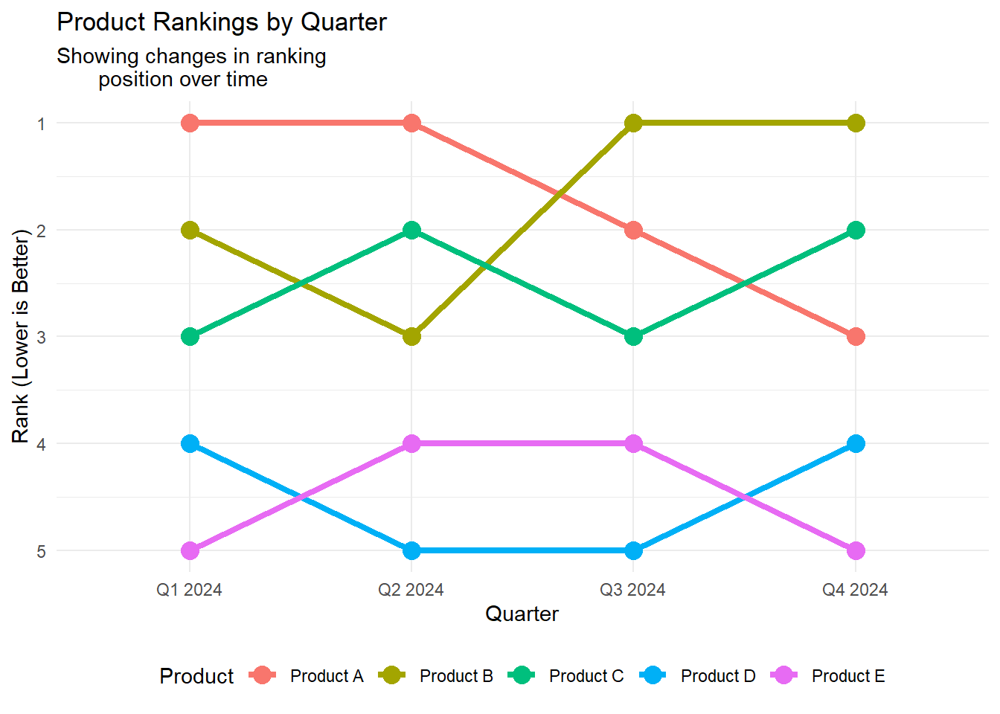

Measurement is a fundamental activity in science, indeed we acquire knowledge about the world around us by observing it, and we usually quantify to give a sense to what we observe. Therefore, measurement is essential in a wide range of research contexts.
There exist several situations in which scientists come up with measurement problems, even though they are not interested primary in measurement. For instance:
A health psychologist needs a measurement scale which doesn’t seem to exist. The study depends on a tool that can clearly distinguish between what individuals want to happen and what they expect to happen when visiting a physician. However, the review of previous research reveals that existing scales often blur this distinction, unintentionally mixing the two concepts. None of the available instruments capture the separation in the specific way her study requires. While the psychologist could create a few items that appear to address the difference between wants and expectations, she/he is concerned that these improvised questions may lack the reliability and validity necessary to serve as accurate measures.
An epidemiologist is conducting secondary analyses on data from a national health survey. They wish to investigate the link between perceived psychological stress and health status. Unfortunately, the survey did not include a validated stress measure. While it may be possible to construct one using existing items, a poorly constructed scale could lead to misleading conclusions.
A marketing team is struggling to design a campaign for a new line of high-end infant toys. Focus groups suggest that parents are heavily influenced by a toy’s perceived educational value. The team hypothesizes that parents with strong educational and career aspirations for their children are more likely to be interested in the product. To test this idea across a broad, geographically diverse sample, the team needs a way to reliably measure parental aspirations. Something that additional focus groups can’t easily provide.
Despite coming from different disciplines, these researchers share a common understanding: using arbitrary or poorly designed measurement tools increases the risk of collecting inaccurate data. As a result, developing their own carefully constructed measurement instruments appears to be the most reliable solution.
Historically, measurement problems were well-known in natural sciences such as physics and astronomy, even concerning figures like Isaac Newton. However, among social scientists, a debate arose regarding the measurability of psychological variables. While physical attributes like mass and length seem to possess an intrinsic mathematical structure similar to positive real numbers, the measurement of psychological variables was considered impossible by the Commission of the British Association for the Advancement of Science. The primary reason was the difficulty in objectively ordering or summing sensory perceptions, as well illustrated by the question: how can one establish that a sensation of “a little warm” plus another similar sensation equals “twice as warm”?
Measurement classification
The americal psychologist Stevens (1946) disagreed with this perspective. He contended that the rigid requirement of “strict additivity,” as seen in measurements of length or mass, was not essential for measuring sensations. He pointed out that individuals could make reasonably consistent ratio judgments regarding the loudness of sounds. For instance, they could determine if one sound was twice as loud as another.
Stevens further argued that this “ratio” characteristic enabled the data derived from such measurements to be mathematically analyzed. He is known for categorizing measurements into nominal, ordinal, interval, and ratio scales. In his view, judgments about sound “loudness” belonged to the ratio scale.
Despite the classification proposed by Stevens has been criticized by several authors and new classifications has been proposed, it is the most commonly accepted and used internationally.
Stevens identified four properties for describing the scales of measurement:
Identity: each value has a unique meaning.
Magnitude: the values of the variable have an ordered relationship to one another, so there is a specific order to the variables.
Equal intervals: the data points along the scale are equally spaced, so the difference between data points one and two, is the same as data points three and four.
A minimum value of zero: the scale has a true zero point.
As previously said, Stevens identified four scales of measurement, that is how variables are defined and categorised:
Nominal scale of measurement: This scale has certain characteristics, but doesn’t have any form of numerical meaning. The data can be placed into categories but can’t be multiplied, divided, added or subtracted from one another. It’s also not possible to measure the difference between data points. It defines only the identity property of data.
Examples: Gender, Etnicity, Eye colour…
Ordinal scale of measurement: It defines data that is placed in a specific order. While each value is ranked, there’s no information that specifies what differentiates the categories from each other. These values can’t be added to or subtracted from.
Examples: satisfaction data points in a survey, where ‘one = happy, two = neutral and three = unhappy.’
Interval scale of measurement: The interval scale contains properties of nominal and ordered data, but the difference between data points can be quantified. This type of data shows both the order of the variables and the exact differences between the variables. They can be added to or subtracted from each other, but not multiplied or divided (For example, 40 degrees is not 20 degrees multiplied by two.).
In this scale of measurement the zero is just a convention and not absolute, it is an existing value of the variable itself.
Ratio scale of measurement: This scale include properties from all four scales of measurement. The data is nominal and defined by an identity, can be classified in order, contains intervals and can be broken down into exact value. Weight, height and distance are all examples of ratio variables. Data in the ratio scale can be added, subtracted, divided and multiplied. Ratio scales also differ from interval scales in that the scale has a ‘true zero’. The number zero means that the data has no value point.
An example of this is height or weight, as someone cannot be zero centimetres tall or weigh zero kilos.
Scales and Questionnaires development
Measurement plays a vital role across scientific disciplines, with each field creating specialized methods and tools tailored to its unique subjects of study. In the behavioral and social sciences, the area devoted to measurement is called psychometrics. This subfield concentrates on evaluating psychological and social constructs, which are most often assessed using questionnaires. Theaching how to build effective questionnaires would require a specific course, but this is out of the scope of this course. The following are some practical guidelines that researchers can use to develop measurement scales and questionnaires.
Determine Clearly What You Want to Measure
Researchers often discover their initial ideas about what they want to measure are vague, which can lead to costly changes later. Key questions include whether the scale should be theory-based or explore new directions, its level of specificity, and which aspects of the phenomenon to emphasize.
Define the theory: Basing scale development on relevant substantive theories is essential for clearly defining the construct being measured, particularly when dealing with abstract or non-observable phenomena. A theoretical basis helps establish the construct’s boundaries, reducing the risk of the scale extending into unrelated areas. In the absence of an existing theory, developers should create a conceptual framework of their own—beginning with a precise definition and linking the new construct to related, established ones.
Determine the level of specificity: In psychometric scale development, it’s important to consider how general or specific the measurement should be. This decision affects how well the scale works in predicting or relating to other variables. For example, if you’re interested in general attitudes about personal control, a broad scale scale works well. But if you’re studying beliefs about controlling a specific health issue, a focused scale is more appropriate.
Define which aspects are enphasised: Scale developers must clearly distinguish the target construct from related ones. Scales can be broad (e.g., general anxiety) or narrow (e.g., test anxiety). Including items outside the intended focus can lead to confusion or inaccurate measurement. For example, in health contexts, physical symptoms caused by an illness might be mistaken for psychological symptoms (like depression), leading to misleading results. Therefore, item selection should match the specific research purpose and avoid overlap with unrelated constructs.
Generate an Item Pool
When developing a psychometric scale, items should be carefully selected or created to match the specific construct you aim to measure. That means you need a clear idea of what the scale is supposed to do, and every item on the scale should reflect that goal.
Imagine the construct (like anxiety, motivation, or trust) as something hidden or latent, which can’t be observed directly. The items on your scale are the visible signs or behaviors that reflect this hidden thing. So, each item acts like a small “test” of how much of that construct a person has. If your items truly measure the construct, then someone with a high level of the trait should tend to score higher on all of them.
When constructing the item pool, it is important to consider the following aspects:
The latent construct A good scale includes multiple items to improve reliability, but every single item must still be strongly connected to the latent construct. You should think broadly and creatively when writing items to make sure they cover all the different ways the construct can be expressed—but without straying into measuring something else.
A construct is a single, unified idea (like “attitudes toward punishing drug abusers”) that can be thought of as causing how someone responds to related items. A category, on the other hand, is just a grouping of different constructs (like “attitudes” in general, or “barriers to compliance”).
Just because several items relate to the same category doesn’t mean they measure the same underlying construct. For instance, “Barriers to compliance” is a category that can include many distinct things (fear of symptoms, cost concerns, distance to treatment, etc.). Each of these could be a separate construct with its own latent variable, so a scale that mixes these up wouldn’t truly be unidimensional (i.e., measuring just one thing).
Redundancy is crucial for reliability: multiple items allow common content to summate while idiosyncrasies cancel out. However, avoid superficial redundancy (e.g., minor wording changes, identical grammatical structures) which can inflate reliability estimates. Useful redundancy involves expressing the same core idea differently. Overly specific or redundant items within a broader scale can create subclusters (e.g., multiple specific anxiety items in a general emotion scale), potentially undermining unidimensionality and biasing the scale. This is less of a problem if the items match the scale’s intended specificity.
The number of items Start with more items than planned for the final scale (e.g., 3-4 times as many) to allow for careful selection and ensure good internal consistency. An initial pool 50% larger might suffice if items are hard to generate or fewer are needed for reliability. If the pool is too large, eliminate items based on criteria like lack of clarity or relevance.
The wording Including both positively worded items (indicating the presence of the construct) and negatively worded items (indicating its absence or low levels) is a common strategy to reduce acquiescence bias—the tendency of respondents to agree with statements regardless of their content. However, reversing the wording can sometimes confuse participants, particularly in general population or community samples, and this confusion may reduce the scale’s reliability.
Caution
Reversing the wording of items (also known as reversed polarity) can confuse respondents, especially if the items are complex or abstract, ot if the respondents have lower reading comprehension or aren’t used to taking surveys.
This confusion can lead to inconsistent or inaccurate responses, which lowers the reliability of the scale (i.e., how consistently it measures the construct).
Determine the Format for Measurement
Defining the measurement format is a critical step in designing data collection instruments like questionnaires and scales. This decision, ideally made concurrently with item generation, impacts data quality, variability, instrument sensitivity, and ultimately, research conclusions.
Most scale items consist of two parts: a stem and a series of response options. A kew aspect of the scale items is the number of response options. A desiderable quality of a measurement scale is variability. One way to increase opportunities for variability is to include lots of scale items. Another way is to provide numerous respose options within each item, especially with fewer items.
In this view, continuous formats (e.g., thermometer scales) offer many gradations, and so increase the opportunities for variability. However, too many options can exceed respondents’ ability to meaningfully discriminate, leading to “false precision” and increased error variance. Researchers must balance the need for variability with respondents’ cognitive limitations.
Another issue the investigator has to concern with, is whether the number of options should be even or odd. This choice depends on the type of question. the type of response option, and the objectives of the investigator.
An odd number of categories usually allows to express neutrality, while an even number of categories forces a choice from the respondent. The choice depends on whether allowing neutrality is desirable or should be avoided.
There exist several ways to present items that are commonly used:
Likert scales: are widely used psychometric tools designed to measure attitudes, opinions, and perceptions by assessing the degree of agreement or disagreement with a statement. These scales typically present a statement (called a Likert item) followed by an ordered series of response options, generally consisting of five or seven points. However, scales with four, nine, or ten points can also be employed.
Response anchors are the labels that define each point on the scale (for example, “Strongly disagree,” “Disagree,” “Neutral,” “Agree,” “Strongly agree”). Scales with an odd number of points often include a neutral midpoint, while scales with an even number of points force the respondent to express a direction (agreement or disagreement).
Likert scales are extensively applied in surveys to assess employee engagement, customer satisfaction, product feedback, and clinical evaluations.
Warning
Although Likert scale data is often numerically coded to facilitate analysis, it’s essential to remember their ordinal nature and approach the calculation of means with caution.
Semantic Differential scales: are assessment tools used to measure attitudes and opinions toward an object, person, event, or idea through pairs of bipolar adjectives. Developed by psychologist Charles E. Osgood, these scales present a concept followed by several rows of opposite adjective pairs placed at the extremes of a continuum, typically with five to seven intermediate points. Respondents evaluate the concept on each adjectival scale by selecting the point that best represents their attitude. Examples of bipolar adjective pairs include “Good - Bad,” “Happy - Sad,” “Strong - Weak,” and “Pleasant - Unpleasant.” These scales are commonly used in market research, branding, and customer satisfaction assessments to understand perceptions and associations.
Semantic differential scales explore the connotative meaning of a concept, revealing the emotional and evaluative dimensions of attitudes, unlike Likert scales which primarily focus on the degree of agreement.
Rankings: represent data where items are ordered according to a specific criterion or preference. Respondents arrange items in a sequence based on their preference, importance, or another defined attribute. Examples include ranking favorite movies, product features by importance, or job candidates. Ranking data indicates relative order but not the magnitude of difference between positions. The difference between the first and second positions might be substantial, while the difference between lower positions might be negligible.
Visual Analog Scale (VAS): Presents a continuous line between two descriptors and the respondents mark a point on the line. Therefore, it is clear that this scale allows continuous scoring but it has to be noted that interpretation can be subjective, and comparisons across individuals may be difficult. An advantage of this type of scale is that it is shghly sensitive, so it useful for detecting subtle changes within individuals over time; moreover they may reduce reduce bias from recalling previous discrete responses.
Binary Options: Offer two choices (e.g., agree/disagree, yes/no, check if applies). This type of option is simple for respondents but yields to minimal variability per item, therefore more items are required for obtaining an adequate scale variance. However, the ease of response may allow for more items to be administered.
Experts’ review
Expert review plays a key role in strengthening content validity during scale development. By drawing on their subject-matter expertise, reviewers help ensure that the items meaningfully represent the construct.
Experts are typically asked to assess how well each item reflects the construct definition, providing feedback that can confirm or refine the conceptual framework. They also evaluate the clarity and precision of item wording, offering suggestions to reduce ambiguity. In addition, experts may highlight important aspects of the construct that have been overlooked.
However, it’s important to note that content experts may not be familiar with psychometric principles. For instance, they might recommend eliminating seemingly redundant items, not realizing that some redundancy is intentional and necessary for reliability. While expert input is highly valuable, final decisions should rest with the scale developer, who must balance expert judgment with methodological rigor.
Subsequent Steps in Scales Development
Following the initial design of the questionnaire, including the selection and construction of appropriate scales, the next crucial phase involves preparing for validation and data collection. This includes strategically incorporating additional items aimed at facilitating later validation efforts, such as those designed to detect response biases or to assess the questionnaire’s construct validity by measuring theoretically related concepts.
Subsequently, the questionnaire is administered to a development sample. It’s essential that this sample is sufficiently large and representative of the target population to ensure stable results and minimize concerns about subject variance.
Once the data is collected, a thorough evaluation of the individual items is undertaken. This involves examining their intercorrelations to ensure they are measuring a common underlying construct, addressing any negatively correlated items through techniques like reverse scoring, and assessing the correlation of each item with the overall scale. Furthermore, the variance and means of the items are analyzed to ensure they discriminate effectively among respondents. Factor analysis is employed to confirm the dimensionality of the scale, and reliability, often measured by Cronbach’s alpha, is calculated to assess the internal consistency of the items.
Finally, the length of the scale is optimized. This involves balancing the need for brevity to reduce respondent burden with the desire for higher reliability, which is generally associated with longer scales. Weak items that negatively impact reliability are considered for removal, and techniques like splitting the development sample for cross-validation can be used to ensure the stability of the optimized scale in new samples.
Visualizing Ordinal Data
The most important principle in visualizing ordinal data is to always represent ordinal categories in their natural, ordered sequence in any visual representation. In bar charts, bars should be arranged along the axis based on the logical order of the ordinal scale (e.g., from “Low” to “High”). For stacked and divergent bar charts, the segments representing ordinal categories should also follow this intrinsic order within each bar.
The choice of chart should align with the research question and the specific aspect of ordinal data being investigated. Not all chart types are equally effective for representing ordered categorical data.
Bar Charts
Represent each ordinal category with a bar, whose height or length corresponds to the frequency or count of that category. Fundamentally, the bars must be arranged in the logical order of the ordinal variable (e.g., from lowest to highest category). They can be vertical or horizontal; horizontal orientation is often preferred for readability of long category labels.
Bar charts provide a clear and easily understandable visualization of the distribution of a single ordinal variable, highlighting the frequency of each ordered category.
library(ggplot2)library(dplyr)# Create sample Likert scale data for one survey questionlikert_data <-data.frame(response_category =factor(c("Strongly Disagree", "Disagree", "Neutral", "Agree", "Strongly Agree"),levels =c("Strongly Disagree", "Disagree", "Neutral", "Agree", "Strongly Agree") ),frequency =c(15, 27, 43, 85, 30))# Create horizontal bar chart with properly ordered categoriesggplot(likert_data, aes(x = response_category,y = frequency, fill = response_category)) +geom_bar(stat ="identity") +scale_fill_manual(values =c("Strongly Disagree"="#d7191c","Disagree"="#fdae61","Neutral"="#ffffbf","Agree"="#abd9e9","Strongly Agree"="#2c7bb6" )) +coord_flip() +# Horizontal orientation for better label readabilitytheme_minimal() +labs(title ="Responses to: 'The new software interface is intuitive to use'",subtitle ="Distribution of 200 employee responses",x ="",y ="Number of Responses" ) +theme(legend.position ="none", # Remove legend as colors are self-explanatoryaxis.text.y =element_text(size =12),plot.title =element_text(face ="bold"),panel.grid.major.y =element_blank() # Remove horizontal grid lines )

Stacked Bar Charts
Show multiple ordinal categories within a single bar, with each segment representing a different category stacked on top of another. They are useful for comparing the distribution of ordinal data across different groups or conditions. They can be displayed as counts or as percentages (where each bar totals 100%).
Stacked bar charts allow comparison of both total amounts within each group and the proportion of each ordinal category within those groups, providing insights into how distributions differ between categories.
This visualization effectively reveals patterns such as which smartphone is perceived as more innovative, which has the most consistent ratings across dimensions, and where the greatest differences between products exist. These insights would be difficult to discern from tables of raw data. The stacked bar format is particularly effective for semantic differential scales because it shows the full distribution of responses, not just averages, allowing you to see whether opinions are polarized or consistent across respondents.
Divergent Stacked Bar Charts
Specifically designed to visualize ordinal data with a neutral central category or bipolar responses, such as Likert scales and semantic differentials. Segments representing responses on one side of the neutral point extend in one direction, while segments representing responses on the other side extend in the opposite direction from a central baseline. They effectively illustrate the balance between positive and negative responses and the distribution of opinions.
Divergent stacked bar charts are the recommended visualization for Likert-type scales as they clearly show the proportion of responses in each category and the overall tendency of agreement or disagreement.
# Install and load required package# install.packages("HH")library(HH)# Frequency data for three items (rows) on a 5-point Likert scalelikert_data <-data.frame("Easy"=c(5, 15, 20, 40, 20),"Helpful"=c(10, 18, 25, 30, 17),"Recommend"=c(8, 12, 15, 35, 30))# Set column names (Likert scale labels)rownames(likert_data) <-c("Strongly Disagree", "Disagree", "Neutral", "Agree", "Strongly Agree")likert_data <-t(likert_data) # Transpose: items as columns, scale points as rows# Create the Likert plotlikert_plot <-likert(likert_data,main ="Customer Feedback on Product Experience",xlab ="Percentage of Responses",ylab =NULL,positive.order =TRUE,reference =0)# Display the plotprint(likert_plot)

Other Possible Visualizations
Depending on the specific analytical objective, these alternative visualizations can provide valuable perspectives on ordinal data, particularly when exploring relationships between variables or tracking changes in rankings.
Mosaic plots show the relationship between two or more categorical variables, including ordinal ones, using tiled rectangles whose area is proportional to the frequency of each combination of categories.
# install.packages("ggmosaic")library(ggplot2)library(ggmosaic)library(dplyr)# Create sample data for education level (ordinal) #and job satisfaction (ordinal)set.seed(123)n <-500education_levels <-c("High School", "Associate's", "Bachelor's","Master's", "Doctorate")satisfaction_levels <-c("Very Dissatisfied", "Dissatisfied","Neutral", "Satisfied", "Very Satisfied")# Create sample data with a pattern #(higher education tends to correlate with higher satisfaction)mosaic_data <-data.frame(education =factor(sample(education_levels, n, replace =TRUE,prob =c(0.3, 0.25, 0.25, 0.15, 0.05)),levels = education_levels),satisfaction =factor(NA, levels = satisfaction_levels))# Generate satisfaction levels with #some correlation to educationfor (i in1:n) {# Higher education levels tend to have higher satisfaction probabilities edu_level <-which(education_levels == mosaic_data$education[i])# Adjust probabilities based on education level probs <-c(0.25, 0.25, 0.2, 0.2, 0.1) # Base probabilities# Shift probabilities based on education level shift <- (edu_level -3) *0.05# Shift factor based on education# Adjust probabilities (higher education gets #more weight for higher satisfaction) adjusted_probs <- probs +c(-0.1, -0.05, 0, 0.05, 0.1) * edu_level# Ensure probabilities are valid adjusted_probs <-pmax(adjusted_probs, 0.01) adjusted_probs <- adjusted_probs /sum(adjusted_probs) mosaic_data$satisfaction[i] <-sample(satisfaction_levels, 1, prob = adjusted_probs)}# Create mosaic plotggplot(data = mosaic_data) +geom_mosaic(aes(x =product(education), fill = satisfaction)) +scale_fill_brewer(palette ="RdYlGn", direction =1) +labs(title ="Relationship Between Education Level and Job Satisfaction",subtitle ="Mosaic plot showing the distribution of satisfaction within each education level",x ="Education Level",y ="Job Satisfaction",fill ="Satisfaction Level") +theme_minimal() +theme(axis.text.x =element_text(angle =45, hjust =1),legend.position ="bottom")

This mosaic plot visualizes the relationship between two ordinal variables: education level and job satisfaction. The width of each column represents the proportion of respondents with that education level in the overall sample. Within each education level column, the height of each colored section represents the proportion of respondents reporting that satisfaction level.
Line charts (bump charts) visualize the change in rank of different items over time or between categories, emphasizing movement in relative positions.
library(ggplot2)library(tidyr)library(dplyr)# Create sample data for product rankings over timerankings <-data.frame(product =rep(c("Product A", "Product B", "Product C", "Product D", "Product E"), 4),quarter =rep(c("Q1 2024", "Q2 2024", "Q3 2024", "Q4 2024"), each =5),rank =c(1, 2, 3, 4, 5, # Q1 rankings1, 3, 2, 5, 4, # Q2 rankings2, 1, 3, 5, 4, # Q3 rankings3, 1, 2, 4, 5) # Q4 rankings)# Create bump chartggplot(rankings, aes(x = quarter, y = rank, group = product, color = product)) +geom_line(size =1.5) +geom_point(size =4) +scale_y_reverse(breaks =1:5) +# Reverse Y-axis so # rank 1 is at the toptheme_minimal() +labs(title ="Product Rankings by Quarter",subtitle ="Showing changes in ranking position over time",x ="Quarter",y ="Rank (Lower is Better)",color ="Product") +theme(legend.position ="bottom")

References
DeVellis, R. F., & Thorpe, C. T. (2021). Scale development: Theory and applications. Sage publications.